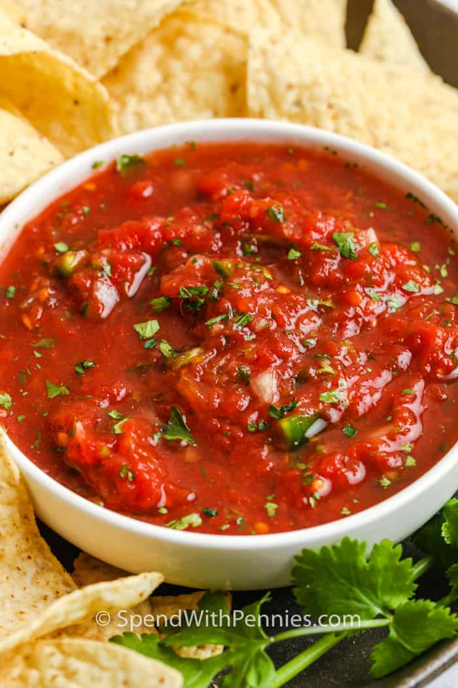

Salsa Recipe

Description
This salsa is the most delicious homemade salsa; tastes just like
you're sitting in your favorite restaurant. Using canned tomatoes,
it doesn't matter what time of year it is. You can always whip up
this delicious dip.
Impress your friends at every gathering with this yummy salsa.
It never fails to earn me compliments! Try it out and see what I mean!
Ingredients
- 1 can crushed tomatoes
- 2 cans of rotel
- 1/2 of a medium red onion
- juice of 1 lime
- 1 tsp cumin, 1 tsp salt
- large handful of fresh cilantro
- 1 jalapeno, stem removed
- 2 cloves garlic
- 1 tbsp red wine vinegar
Steps
- In a food processor, add the onion, garlic and jalapeno. Pulse until finely chopped
- Add the whole tomatoes and rotel. Add the cilantro, lime juice, cumin, salt, red wine vinegar. Pulse until desired consistency.
- Store in airtight container in refrigerator. Keeps for a few weeks!